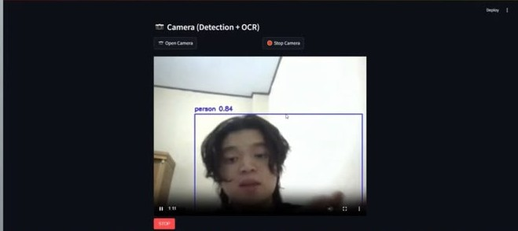

Glucode
A nutrition-label scanner and summarizer with reusable food cards and daily intake tracking.
My part: Product concept · user flows · Figma prototype
February–June 2026Project story
Projects
Personal projects, university work, and experiments in progress. Explore the idea, my contribution, and where each one stands.
9 projects
No projects match that search. Try another word or choose All work.
Completed projects with a clear story to tell.
A nutrition-label scanner and summarizer with reusable food cards and daily intake tracking.
My part: Product concept · user flows · Figma prototype

An individual MLOps assignment covering preprocessing, classification-model comparison, a prediction application, and Docker packaging.
My part: Workflow · experiments · app publication · Docker

A three-person coursework project combining object detection with spoken descriptions.
My part: Text-to-speech integration · queue behaviour
Experiments that are still taking shape.


A private personal AI assistant with a tunable personality, with tools and features added one by one as my needs develop.
My part: Concept · workflow design
Exploring the GTZAN dataset before training a music genre classifier.
My part: Audio-data exploration & preparation
Studying how quantization and calibration data affect spoken-command recognition under previously unseen noise.
My part: Experiments in a two-student team
Another assignment, with its own dataset and lessons.
A separate individual coursework assignment comparing loan-approval classifiers and packaging a prediction application.
My part: Workflow · notebooks · publication · Docker
Research ideas developed with a team.
A team project exploring weather-based paddy-drying prediction with physics simulation and machine learning.
My part: Research concept · paper writing
The infrastructure and space around the work.
An HP Pavilion 14-bf0xx repurposed as an Ubuntu host for personal services.
My part: Guided setup · service operation · experimentation